Case Study 06 — Lightspeed
Designing convenience to win customer loyalty
A unified app that let users collect loyalty points from multiple stores and redeem coupons, resulting in 85% of testers saying they'd recommend it to a friend.
The story
Lightspeed researchers conducted qualitative research to identify underserved user needs in the market. Then, through quantitative research, we determined which ones were most important and least satisfied. I then combined the Jobs-To-Be-Done and Design Thinking processes to dig deeper and design a solution.
Problem
1. Customers never have their loyalty cards with them when they need them.
2. Store owners want to find customer info with fewer clicks on their system.
Solution
Let's clear the fog and redesign the nav to be user-friendly.
Outcome
A unified app that allowed users to get loyalty points from multiple stores and redeem coupons as well.
Results
85% of testers said they'd recommend the app to a friend. Users liked that they could view all coupons in one place without carrying multiple cards and scan the QR code for quick account verification at the cash register.
Role
UX Researcher & UI Designer
Year
2022
Duration
November 2022
Team
Individual project
Deliverables
Quantitative research, competitive analysis, persona, JTBD, storyboard, task flow, wireframes, hi-fi prototype, user testing
This is the final product
The Points App — one place for loyalty cards and coupons.
The problem
Loyalty cards nobody carries, and store owners buried in clicks
Customers never had their loyalty cards on hand when they needed them, and store owners wanted to find customer info with fewer clicks in their system.
⚠ Loyalty cards left at home, at the exact moment they're needed
The solution
Let's clear the fog and redesign the navigation to be user-friendly — one app, multiple stores, points and coupons in a single place.
Process
Overview of steps taken
Quantitative research
Competitive analysis
Problem statement definition
User persona
Core functional JTBD
How Might We questions
User storyboarding
Task flow
Low-fi wireframing
Prototyping & testing
Discovery
Quantitative research & data synthesis
Quantitative research
I collected feedback from end-users to narrow down unmet needs to solve.
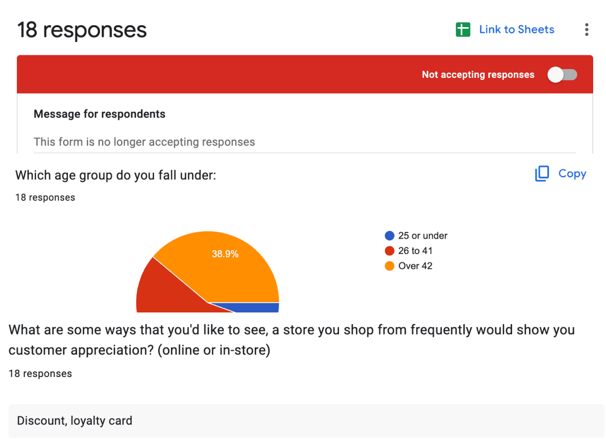
Data synthesis
I categorized all the data to see which unmet needs to prioritize.
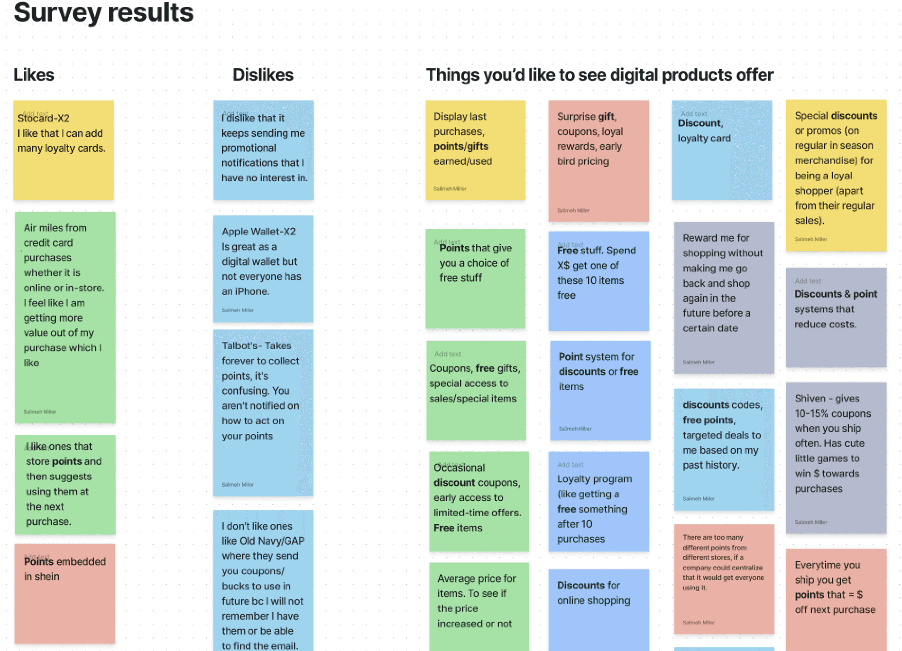
Competitive research
Competitive analysis: pros & cons
I peeked at solutions already out there to understand the rules of the game before designing my own.
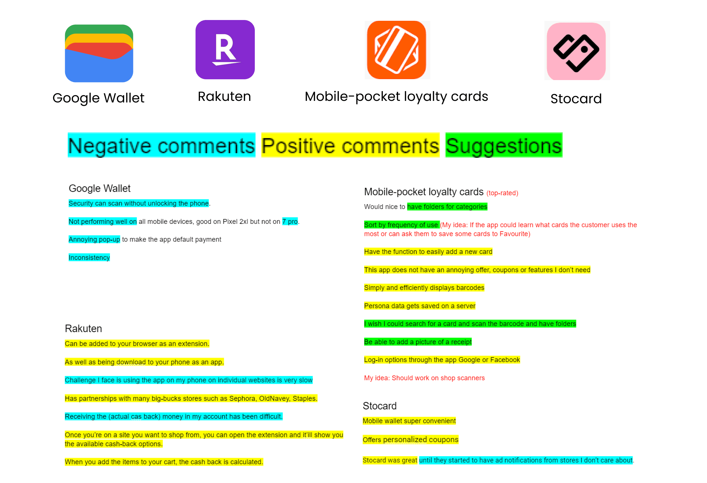
Root cause
Problem statement: the 5 whys
I used the 5 whys method to get to the root cause of the issue before jumping to solutions.
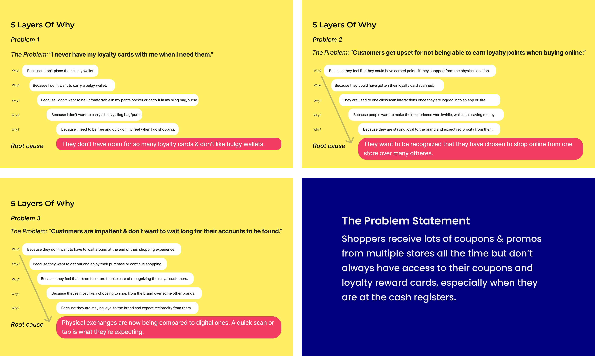
Who we're designing for
User persona: Mikey
I built a user persona based on the research participants to keep the team grounded in a real point of view.
Pain points
I never have my loyalty cards with me when I need them.
Desires
I'd like to receive coupons and discount codes and have them ready without going to my email to find stuff.
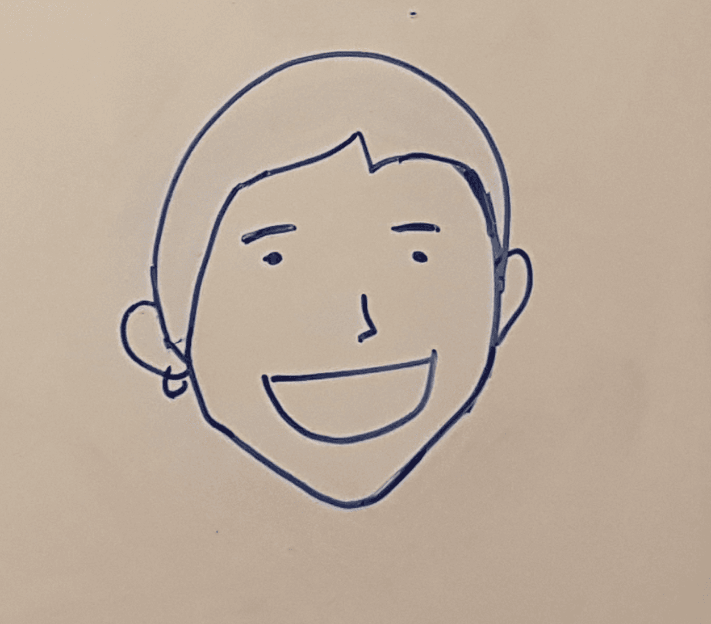
Meet Mikey
Mikey
38 · Developer · Toronto
"I want my brand loyalty to be rewarded."
Framing the need
Core functional Jobs-To-Be-Done
I had to reflect on "what job are our users trying to get done?"
Jobs-To-Be-Done
Get discounts when shopping.
Ideation
How Might We, storyboarding & task flow
Ideation with How Might We questions
Reframing the problem to "How Might We" questions to ideate solutions.
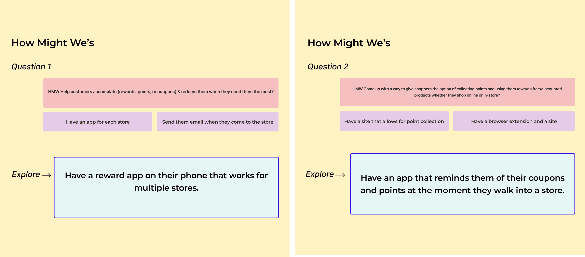
Storyboarding
I drew a story to help me imagine how the user would benefit from the solution.
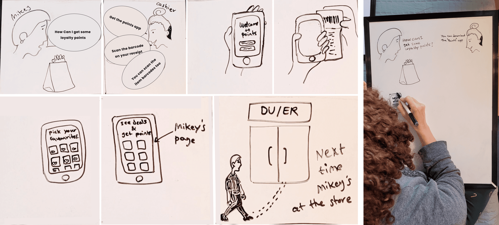
Task flow
Mapped out the actions and screens the user needs to complete the job.
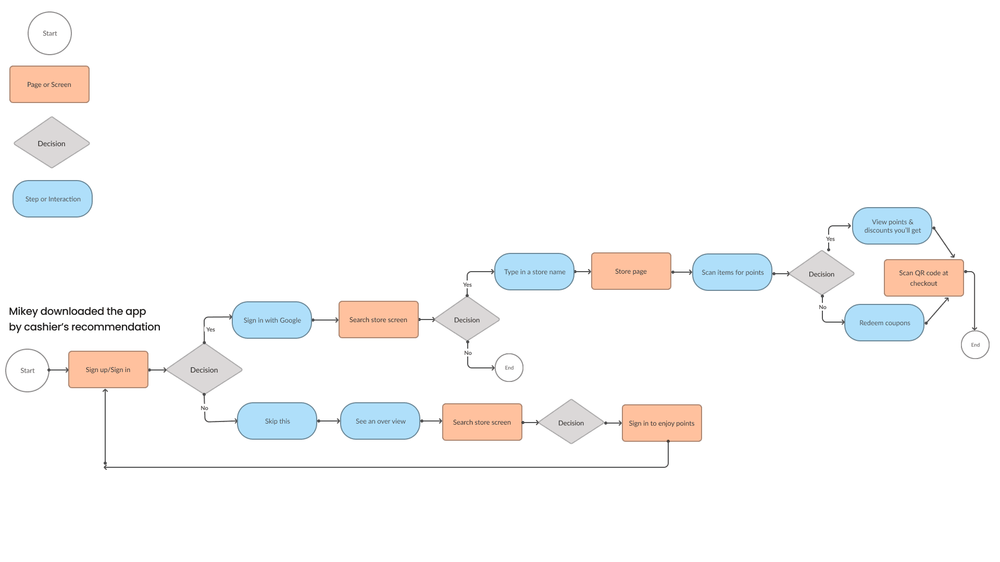
Foundations
Style guide & low-fi wireframes
Style guide
Created a style guide for the UI look and feel while considering the industry and UX principles.
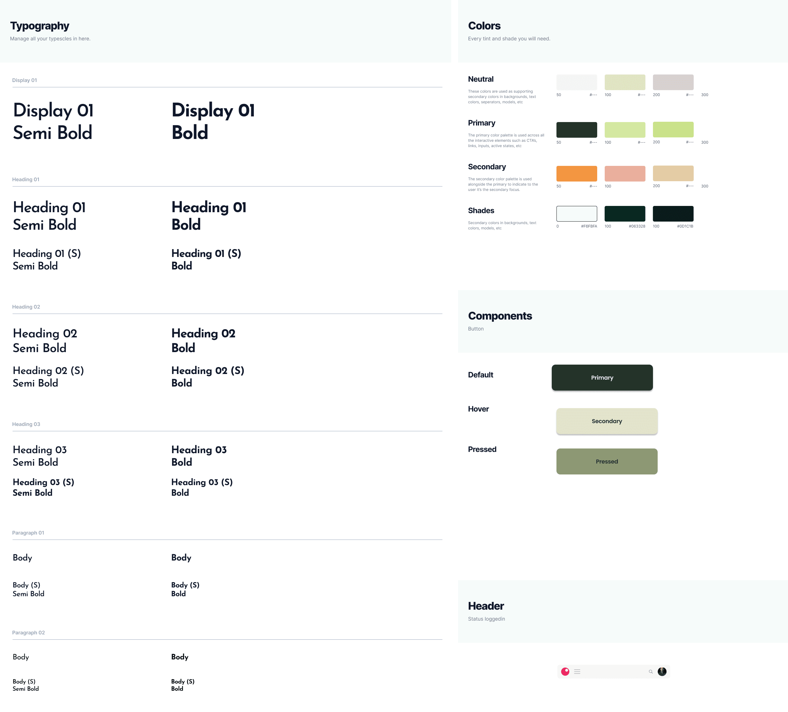
Low-fi wireframes
Mapping out the actions and screens needed by the user to get the job done.
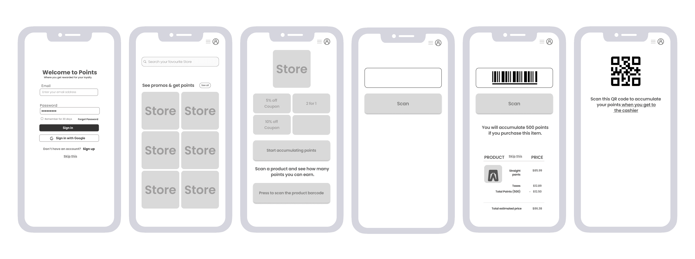
Results
Hi-fi prototype & user testing
Hi-fi prototype screens
I built the prototype in Figma while staying focused on the users' unmet need.
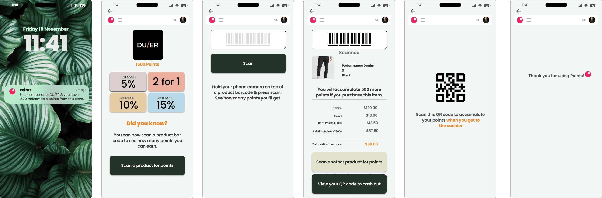
User testing
Tested the prototype on Maze with 12 users and received constructive feedback that improved the prototype.
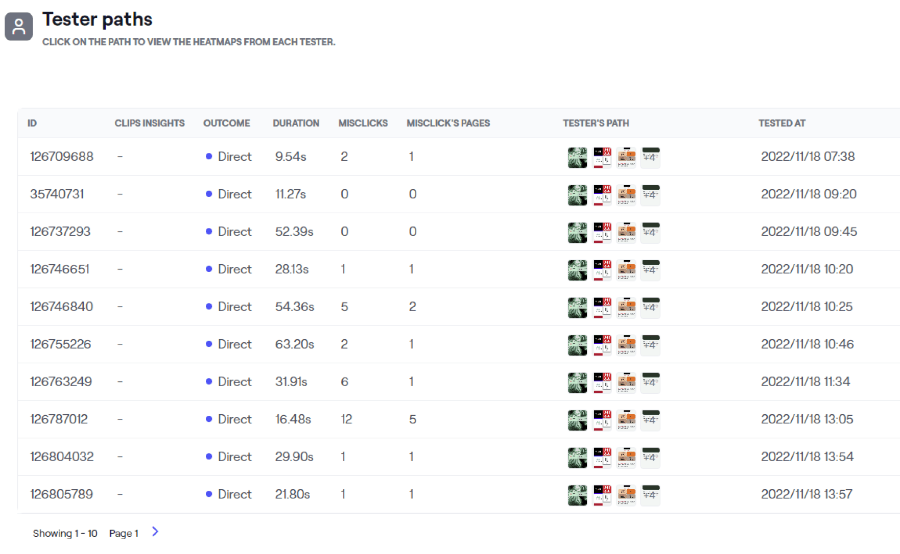
What users said
Users liked that they could view all coupons in one place without carrying multiple cards, and scan the QR code for quick account verification at the cash register.
85%
of testers said they'd recommend the app to a friend
Final product
The Points App
Impact & results
A unified app that made
brand loyalty easy to keep
85% would recommend the app to a friend
Reflection
Final thoughts
I would have liked to develop two personas — one for the end-user and one for the store owner — and design the experience for both.
If I had more time, I would have loved to design an extension that would help users collect points when shopping online. The users raised this concern many times during the quantitative research.
Check out what else I've worked on